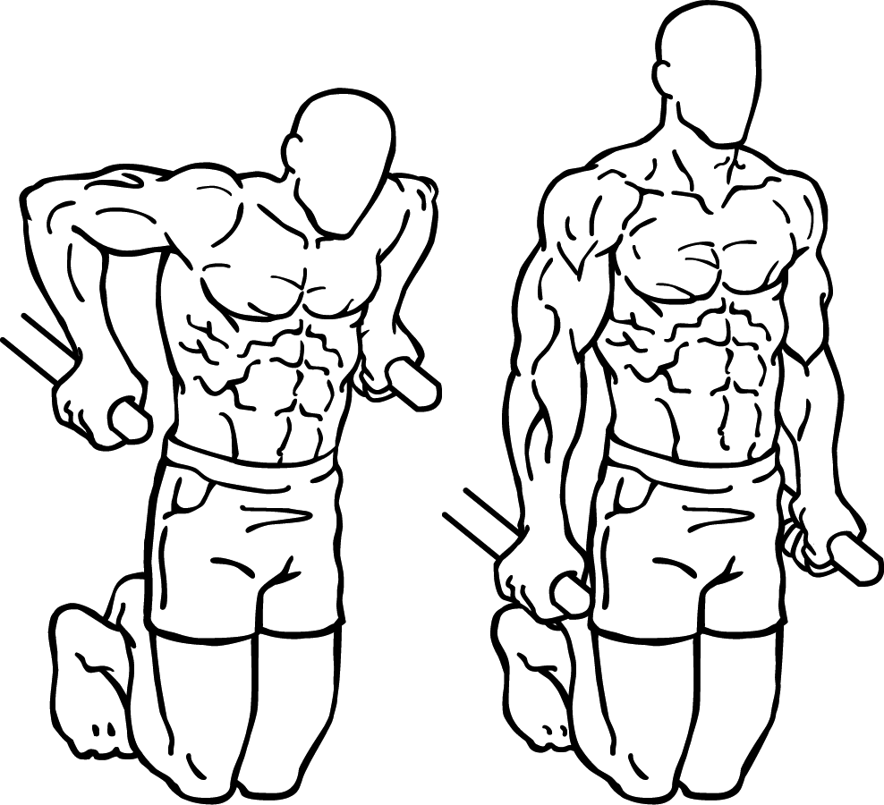

PECTORAUX
DEVELOPPE COUCHE

Le développé couché (raccourci "DC") est l'exercice de base pour les pectoraux, (c'est un
des principaux exercices de forces avec le squat et le soulevé de terre) il
vous faut un banc de DC avec une barre droite, vous devez prendre la barre
un peu plus large que les épaules, vos pieds doivent être à plat sur le sol,
cela vous aidera quand vous soulèverez des charges lourdes, vous pourrez
pousser sur vos pieds. Le dos doit être à plat sur le banc, vous ne devez pas
le cambrer, sinon vous risquez de vous blesser au niveau des lombaires. Vous
devez descendre la barre lentement au niveau du haut des pectoraux, la barre
ne doit que frôler les pectoraux et elle ne doit pas les toucher. Cet exercice
est réalisable avec des haltères, il faut faire le même mouvement mais avec
des haltères.
DEVELOPPE COUCHE INCLINE

Le développé incliné se fait sur un banc incliné, il faut bien faire
descendre la barre verticalement, cet exercie cible le haut des pectoraux,
il faut faire descendre la barre sans toucher les pectoraux mais juste en
les frôlant, il faut la descendre au niveau du dessus des pectoraux. Cet
exercice est réalisable avec des haltères et vous pouvez, en plus du mouvement,
faire pivoter les bras pour qu'ils arrivent l'intérieur du bras en face de
l'autre, il ne faut pas que les haltères s'entrechoquent.
ECARTE COUCHE

Cet exercice peut se faire avec des haltères ou à la poulie en vis-à-vis,
avec les haltères, il faut que vous soyez couché sur le dos sur un banc en position
horizontale, les bras sont tendus, parallèles et dirigés vers le plafond, vous devez les
écartés lentement jusquà ce qu'ils soient parallèles au sol, les bras doivent rester
tendus pendant toute la durée de l'exercice, puis vous devez faire le mouvement
inverse jusqu'à la position initiale. A la poulie en vis-à-vis, vous devez avoir
le banc en position horizontale à distance égale des deux poulies, les poulies
sont en position basse vous devez faire le même mouvement, les bras toujours
bien tendus.
DIPS

Les dips sont très simples à réaliser car il suffit de deux barres parallèles,
vous devez vous mettre les bras tendus entre les barres, il faut que vous penchiez
le buste vers l'avant pour cibler un peu plus les pecs, car cet exercice est très
complet et fait travailler tout le buste, ainsi que les triceps. Vous pouvez ajouter
du leste si votre poids de corps ne suffit pas.
ECARTES A LA POULIE

Les écartés poulies se réalisent aux poulies en vis-à-vis et peuvent être réaliser de plusieurs façons différentes selon la hauteur à laquelle vous voulez mettre la poulie, nous allons vous présentez deux façons
de réaliser cet exercice.
Poulies en position basse : pour cet configuration, vous avez les pieds au même niveau et les mains commencent au niveau des jambes vous devez remonter lentement,
les mains en gardant les bras tendus, jusqu'à ce que les mains soient devant vous au niveau des yeux et vous pouvez aller plus haut que vos yeux, et vous devez faire le
mouvement inverse mais en résistant pour que les poulies aillent le plus lentement possible et ainsi maximiser l'effet de l'exercice.
Poulies au dessus des épaules : il faut que les poulies soient juste au-dessus des épaules et non pas à la position la plus haute, au début du mouvement,
vos bras sont écartés et tout en les gardant tendus, vous les ramenez devant vous, il ne faut pas plier les coudes de tout le mouvement.